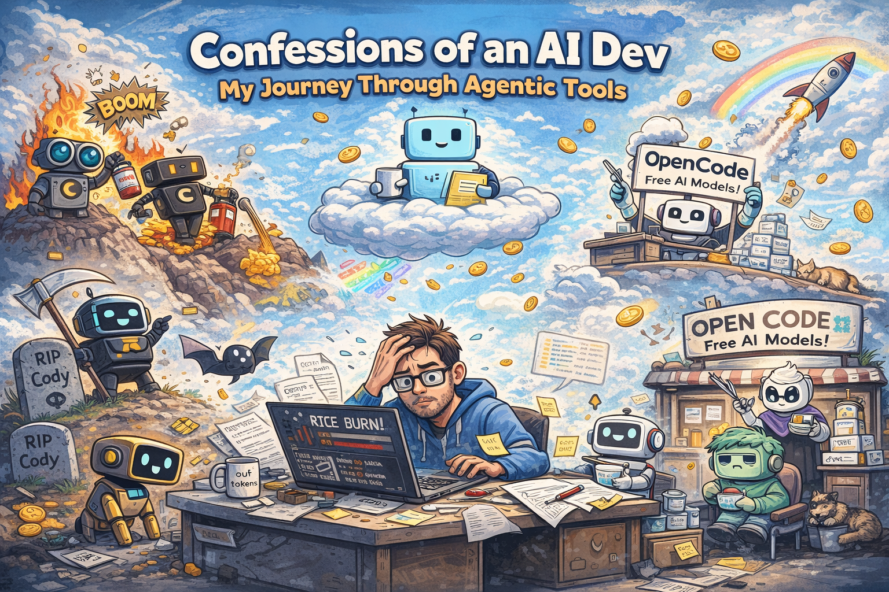

AI Models, Agentic Tools, and Great Yogurt Economy

A very serious technical analysis written with a straight face.
The Year I Learned AI Is Not Magic, It's a Meter
There was a time when I thought AI was a friendly ghost living inside my editor.
You ask nicely. It helps. End of story.
Then one day my plan finished in two days.
That was the day I realized:
AI is not magic. AI is electricity with a billing department.
The Early Days: When AI Was Cheap and Innocent
Back in the peaceful era, I used tools like Cody.
- $9 a month
- Models everywhere
- No anxiety
- No agentic chaos
I even forgot to pay once. They froze my account, gave me $4 credit, then said:
"Okay fine, take Pro forever."
That should have been my first warning sign.
Soon after, Cody was sunset. Only later did I understand why.
I was using AI to apply diffs carefully. Others were using AI to vibe-code startups in 10 minutes.
Guess which group gets more YouTube views.
Agentic AI: When Tools Started Looking Busy
Then came the agentic era.
Agents that:
- think
- retry
- upgrade
- downgrade
- check logs
- generate markdown
- generate more markdown
- run
git reset
Progress felt dramatic. Results felt optional.
One memorable session:
- 80% of tokens
- endless retries
- zero net improvement
But wow, the AI was working very hard.
Claude: The Brilliant Consultant Who Sends Invoices
Claude is smart. Sometimes extremely smart.
It will:
- read logs like a detective
- loop patiently
- actually find nasty bugs
It will also:
- burn tokens politely
- create files you never asked for
- send you a bill that arrives emotionally before it arrives financially
Claude charges you for thinking.
Sometimes that's worth it. Sometimes you just wanted the bug gone.
Codex: The Calm Engineer Who Respects Your Repo
Then I met Codex.
Codex doesn't:
- refactor your entire project by accident
- delete half a file because it's long
- generate twelve markdown documents about the change
Codex:
- touches what you asked
- keeps APIs stable
- leaves quietly
Most tasks take 12%. Some tasks also take 12%.
And you never feel stressed.
That's not an accident. That's product design.
Cursor: Heaven for New Users
Cursor did something radical:
- Auto mode is free
- 500 chats
- No model anxiety
- No cost math
Heavy task? Same counter. Light task? Same counter.
Cursor absorbs complexity so users can learn.
This is why beginners love it. This is why professionals respect it.
AMP: The Quiet Student Eating Yogurt Alone
Sourcegraph AMP is powerful. Very powerful.
It just doesn't tell you:
- which model it uses
- how much it costs
- why it chose that path
No dropdown. No override. Just trust.
AMP isn't dumb. It's cost-optimized.
Internally it likely does:
- cheap model
- medium model
- expensive model (very carefully)
Great for providers. Frustrating for people who value time over tokens.
AMP sits in the last row, eating yogurt, solving enterprise problems quietly.
Grok: Potential, Strategy Sold Separately
Grok has potential.
It also has:
- confusing plans
- chat separate from code
- API separate from everything
- prices that look like a dare
At $300/month, users expect:
"Use me everywhere."
Instead they get:
"Think carefully before clicking."
Developers don't like thinking about invoices mid-flow.
OpenCode: Free Haircuts for Training Models
OpenCode feels… fine.
Because it's a training ground.
New models show up like junior hairdressers:
"Free haircut! Please sit!"
You leave with:
- an okay result
- no bill
- mild curiosity
The real payment is data.
Some of these models will grow up. Some will start charging. Everyone will say they got better suddenly.
They didn't. They just finished their apprenticeship.
The Final Lesson
In 2026:
- All major models are good
- Few models are calm
- The best tools respect your time
- The best pricing hides anxiety, not reality
The real differentiator isn't intelligence.
It's friction per task.
And if your AI tool makes you forget the meter exists…
That's real magic.